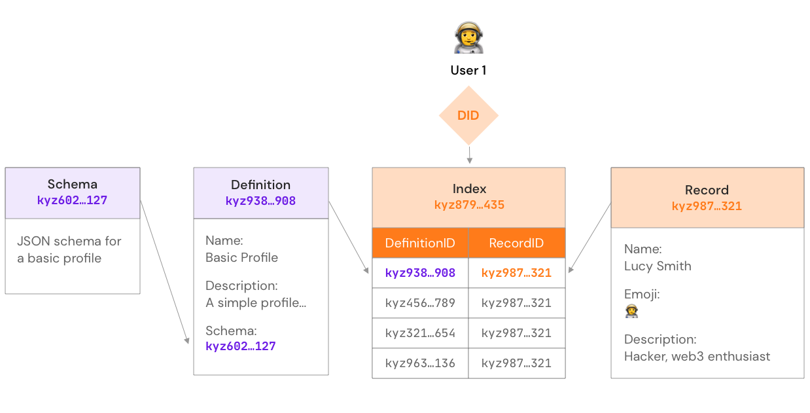

IDX¶
IDX is a decentralized identity protocol and JavaScript SDK that provides APIs which make it easy for developers to build applications with user-controlled streams for storing data, as well as to discover and make use of user data created on third-party applications. Building with IDX allows users to control their identities and data in a manner independent from any single application, while allowing developers to build data-rich applications without the liability of custodying user data on a centralized server or the poor user experience of forcing users to recreate the same data on every application.
This page mentions that IDX is intended for storing "user" data as that is its primary use case. However IDX can be used for storing data for other types of subjects represented by DIDs such as businesses, organizations, applications, assets (NFTs), or devices (IoT).
Features¶
DID-compatibility: IDX does not provide DIDs, but relies on them for decentralized, platform-agnostic identifiers. IDX can work with any DID method that is supported in Ceramic. Various DID methods, such as 3ID, support linking to and authenticating with many different blockchain accounts (see 3ID Keychain (CIP-20)). This allows DIDs to serve as a universal, cross-chain and platform-agnostic identifier for users.
Stream-based storage: Store data for your users or your application in user-controlled streams on Ceramic. Data in streams can be stored in cleartext or encrypted. IDX-created streams enjoy all the benefits of mutability, persistence, replication, and availability provided by the Ceramic network.
Identity hubs: Whenever a user stores data in a new stream via IDX, its streamID is automatically registered in their index, which is a separate stream that serves as a single catalog of references to all their data. The index enables all data associations for the user to exist in one place, which in turn enables any application to discover all data about the user by simply querying their index.
Public, semantic data descriptions: All data stored via IDX is semantically described and organized in the user's index, allowing multiple applications to make use of the same data based on schemas and metadata instead of which application the user was using when they first created the data.
Cross-application data portability: The combination of DIDs, streams, hubs, and semantic data descriptions allows user data to be stored in an application-agnostic manner and can be used across different applications or interfaces. No application maintains "special permissions" since users are in full control.
Standard interfaces: IDX provides standardized read/write APIs for interacting with all data so applications aren't ever forced to integrate one-off APIs.
Built on open standards: IDX builds on open standards for decentralized identity shepherded by the Ceramic community via CIPs, and other related identity communities such as W3C and the Decentralized Identity Foundation (DIF).
Protocol design¶
Dive into the design and architecture of the IDX protocol, which is implemented by the IDX SDK.

Index¶
The index is a stream controlled by the user's DID which stores entries consisting of definition (represented by a streamID) to record (represented by a streamID) mappings. Every DID has only one global index and its entries represent the entire catalog of data that belongs to the user. An index is similar to a row in a user table, and enables the decentralized association and discovery of streams that belong to a user.
Example:
{
"kyz123...456": "ceramic://kyz789...012",
"kyz345...678": "ceramic://kyz901...234",
"kyz567...890": "ceramic://kyz123...456",
"kyz789...012": "ceramic://kyz345...678"
}
Definitions¶
Definitions are streams created by application developers that store metadata which describes the stream used for data storage. Definitions allow records to be semantically described and queried using their metadata or schema and are similar to a column in a user table. The streamID of the definition is a key in the index.
Example:
{
name: 'Basic Profile',
description: 'A simple basic profile.',
schema: 'ceramic://kyz123...456'
}
Schemas¶
Schemas are streams created by application developers that store a JSON schema. They specify the data schema of a record. Schemas are identified by the streamID of the stream that stores the schema, which is included in the definition as seen above.
Records¶
Records are streams that store information for a DID. They can directly store content, or they can store foreign key references to external datastores outside of Ceramic. A record is similar to a cell in a user table. The streamID of the record is a value in the index.
Example:
{
name: 'Alan Turing',
description: 'I make computers beep good.',
emoji: '💻'
}
How it works¶
Storing data with IDX¶
- Application developer creates stream that contains a JSON schema.
- Application developer creates a stream that contains a definition and includes the StreamID of the stream containing the schema.
- User creates a record (a stream) that conforms to the definition as they interact with an application.
- IDX automatically adds the definition streamID and the record streamID as an entry in the user's index.
Reading data from IDX¶
- Application queries a user's index by passing the user's DID and the streamID of a definition. Before performing this action, an application can query the user's entire index to see which definitions they have.
- Application gets back the record that corresponds to the definition.
Sample Use Cases¶
Authentication secrets: 3ID Connect uses IDX to create a DID-controlled stream which stores encrypted authentication secrets that allows a 3ID DID to be authenticated with various blockchain wallets. To achieve this, the 3ID Connect team has created the 3ID Keychain definition (CIP-20).
Profile information: DNS.xyz uses IDX to create a DID-controlled stream which stores basic profile information for the DID. To achieve this, the DNS.xyz team uses the Basic Profile definition (CIP-19).
Web2 social account links: Self.ID uses IDX to create a DID-controlled stream which stores a list of Web2 accounts controlled by the same user that owns the DID, along with verifiable claims which prove this ownership. To achieve this, the Self.ID team has created the Also Known As (AKA) definition (CIP-23).
Web3 Crypto account links: 3ID Connect uses IDX to create a DID-controlled stream which stores a list of streamIDs for CAIP10Links that publicly prove the owner of this DID also owns various accounts on Web3/blockchain platforms. To achieve this, the 3ID Connect team has created the Crypto Accounts definition (CIP-21).
Implementations¶
IDX is available as a JavaScript client library.
Usage¶
Visit the IDX documentation to install and use IDX in your project.
Learn more¶